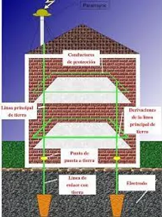

POLO A TIERRA
¿Qué es?
La puesta a tierra o polo a tierra, es un mecanismo de seguridad
que forma parte de las instalaciones eléctricas y que consiste en
conducir eventuales desvíos de la corriente hacia la tierra con
ayuda de un cable de cobre con pinzas, conectado entre el polo a
tierra y el carro tanque, impidiendo que las personas reciban
descargas de electricidad estática, se generen incendios o
explosiones.
Toda instalación eléctrica que le aplique el RETIE (Reglamento
ténico de instalaciones eléctricas) o conocido comúnmente como
polo a tierra, tiene que disponer de un sistema de Puesta a Tierra
(SPT), los STP permiten proteger la integridad de las personas
evitando que reciban descargas eléctricas o fugas de electricidad,
cuidar los aparatos eléctricos y la compatibilidad
electromagnética.

FUNCIONAMIENTO
- Garantizar condiciones de seguridad a los seres vivos.
-
Permitir a los equipos de protección despejar rápidamente las
fallas.
- Servir de referencia común al sistema eléctrico.
-
Conducir y disipar con suficiente capacidad las corrientes de
falla, electrostática y de rayo.
- Transmitir señales de RF en onda media y larga.
-
Realizar una conexión de baja resistencia con la tierra y con
puntos de referencia de los equipos.
Componentes de un polo tierra
-
Frecuencia de reloj: Este primer término hace referencia a
la velocidad de reloj que hay dentro del propio procesador. Es un
valor que se mide en Mhz o Ghz y es básicamente la cantidad de
potencia que alberga la CPU. La mayoría de ellas cuentan con una
frecuencia base (para tareas básicas) y otra turbo que se utiliza
para procesos más exigentes (para gaming, por ejemplo).
-
Consumo energético: Es normal que nos encontremos con CPU
's donde su consumo energético varíe notablemente. Es un valor que
se muestra en vatios (W) y como es obvio, aquellos procesadores de
gama superior, serán más propensos a consumir más energía. Ante
esto, es importante también contar con una fuente de alimentación
acorde a la potencia de nuestro procesador y tarjeta gráfica.
-
Número de núcleos: Con el avance de la tecnología, ya es
posible encontrar tanto procesadores de Intel como de AMD que
cuentan desde 2 hasta 64 núcleos. Estos cores son los encargados
de llevar a cabo multitud de tareas de manera simultánea sin que
el PC tenga que trabajar a “marchas forzadas”. Aquí depende
también mucho del uso que le vayáis a dar a vuestro ordenador. Si
lo vais a usar únicamente para tareas de ofimática, con una CPU de
uno o dos núcleos será más que suficiente. Aunque si ya queréis
hacer streaming, jugar o llevar a cabo labores de edición de
vídeos, necesitaréis al menos cuatro.
-
Zócalo: Es el tipo de conector con pines o socket al que
debéis conectar a vuestra placa base. Es muy importante que os
fijéis en este término, ya que de lo contrario, podéis comprar sin
querer una CPU que sea incompatible con vuestra motherboard. Por
ejemplo, las últimas de Intel suelen tener el socket LGA 1200,
mientras que las de AMD con Ryzen son AM4.
-
Número de hilos: Dentro de cada núcleo puede existir un
hilo o core virtual, que tienen como objetivo llevar a cabo otros
procesos más pesados sin que el rendimiento del PC o del portátil
se vea afectado. Esta tecnología es lo que se conoce como
“hyper-threading”, un término que acuñó Intel, pero que a día de
hoy se usa indistintamente para cualquier marca.
-
Memoria caché: A la hora de “recordar” cualquier tarea, el
propio ordenador hace uso de la memoria RAM. Sin embargo, a veces
esto no es del todo suficiente y por tanto es necesario que
utilice la memoria caché de la propia CPU. Se caracteriza porque
se llega a ella de forma más rápida y puede ser tipo L1, L2 y L3.
Procesos de instalación
-
Un ingeniero eléctrico o tecnólogo eléctrico debe ser el encargado
de realizar la instalación de la puesta a tierra.
-
Se debe realizar un hueco suficientemente amplio para sacar la
tierra y verificar que no hayan piedras demás de 2 cm, en caso de
que se encuentre este tipo de terreno se podrá cernir la tierra,
para preparar la instalación.
-
Este sistema debe tener una resistencia no mayor a 25 ohmios.
-
Se debe realizar un mantenimiento periódico por estar en la
intemperie y expuestos a la corrosión.